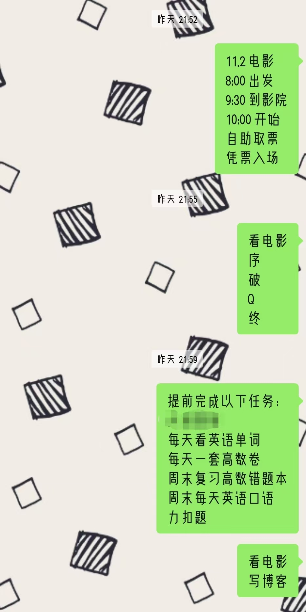

再见了，过去
时间经过：2025.10.30-2025.11.02
再见了，所有的Evangelion
一直以来，我都以“宅”自居。
我也常常和别人说起自己喜欢呆在家里的习惯。
渐渐的，好像每个人都知道，比起出门，我更喜欢宅在家里。
反过来，这又加强了我对于自己“宅”的刻板印象。
于是我越来越宅，越来越怕于与陌生人交往。
其实细数下来，对于比较正式的场合，我觉得自己还是能够应付的比较好的。
只是总体来说，我也许还是不太E的。
（指MBTI中的I/E）
在高中那阵，意识到这一点后，我趁着自己理性的时候，给自己悄悄地下了一个决心：找机会自己去电影院看一部喜欢的电影，顺便锻炼锻炼自己。
可惜的是，高中三年的每个寒暑假，我都以“太忙”为理由，哄骗自己留在comfortable zone。以至于这个决心一直没有实现。
偶然的一次，当我照例上网冲浪时，看见了一个很令人兴奋的消息：
我去！这个好看！我要看！
{kind=link}
（this is 插叙）
第一次看EVA，大概是在高中
当时看的是老版
我当即就被炫酷的画面、深刻的哲理、对于我来说完全新奇的宗教内容、先前没见过的机器与生命体的奇妙结合，完全地吸引住了。
（太酷了！）
然后我看见了新版。接着我看见了鸽了好多年的《终》。然后出于不喜欢连载作品而喜欢完结作品的心理，我就一直都没有看新版。
所以前两天看见《终》上映的消息，我很激动啊。激动的心促使我再次下定决心：我要自己一个人去看电影。
然而正值期中考试前夕，我又早给自己定下了不少计划：高数、英语、C语言……
但我头脑一热，心想，我怕它？

奋斗！
想看电影的心，让我的生活有了奔头。
也让我暂时走出了“内向循环”的怪圈。
{kind=link}
我真的很喜欢自己的计划被完美执行的感觉。虽然有点累，但是很爽。
（在实施计划（补新版《序》《破》《Q》）的过程中，我也发现，我靠，各个使徒的形象是怎么想出来的？这想象力简直惊为天人啊！
（新剧场版也太酷了！热血澎湃！）
等到了去电影院那天，我的心里除了激动，还是有相当一部分的忐忑的。毕竟我还是那个不愿主动开口说话的我。面对陌生的环境，比起向陌生人询问，我更倾向于自己多走几圈、自己多等一会。
等电影院开门、吃饭、等公交，内心都很忐忑不安。
我何时会有所改变呢？
我想，做出改变所需要的正是无数个“第一次”。比如今天就是我第一次独自一人去电影院。我相信今后也会有许多个“第一次”，我也会不断成长、不断变化。
所以我会说：
再见了，过去。
（P.S.《天鹰战士：最后的冲击》真的很精彩！）